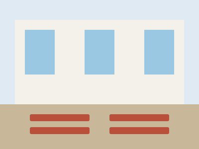

Réserver une salle
Comment réserver une salle ?
La mairie de Lacroix-Falgarde propose à la réservation de nombreuses salles communales de différentes capacités pour les associations, particuliers, sociétés ou administrations.
Toute demande de réservation fait l’objet d’un dossier administratif. La réservation est accordée en fonction de critères formels, notamment l’adéquation entre la configuration des lieux et la manifestation envisagée. Les pièces à joindre au dossier dépendent de votre situation et vous sont indiquées au fil du formulaire.
À tout moment, la mairie de Lacroix-Falgarde reste prioritaire dans l’utilisation des salles communales, au titre de l’intérêt général, même si celles-ci ont été préalablement préservées.

Salles disponibles
| Salle | Adresse | Capacité maximale |
|---|
Tarification des salles
| Tarifs | Cautions | |||
|---|---|---|---|---|
| Associations de Lacroix-Falgarde | Particuliers de Lacroix-Falgarde | Associations, particuliers, professionnels, etc. | ||
| Salles communales | ||||
| Foyer rural | Gratuit | Journée : 250 € WE : 350 € | Journée : 500 € WE : 900 € | Salle : 1 000 € Ménage : 200 € Matériel : 300 € |
| Autres salles | Gratuit | ½ journée : 50 € Journée : 100 € WE : 150 € | ½ journée : 100 € Journée : 200 € WE : 300 € | Salle : 300 € Ménage : 100 € Matériel : 150 € |
Les éventuels frais de location et cautions devront être fournis lors de la signature de la convention.
Matériels disponibles et tarification
| Matériel | Total | Dimensions en cm longueur × largeur × hauteur |
|---|
| Tarifs | Cautions | |||
|---|---|---|---|---|
| Associations de Lacroix-Falgarde | Particuliers de Lacroix-Falgarde | Associations, particuliers, professionnels, etc. | ||
| Chaises / Bancs / Tables / Barrières | Gratuit | Gratuit | Pas de prêt | 300 € |
| Barnums | Gratuit | Journée : 50 € / u | Pas de prêt | 500 € |
La réservation des tables, bancs, barnums et barrières n’est réservée qu’aux habitants et aux associations de Lacroix-Falgarde.